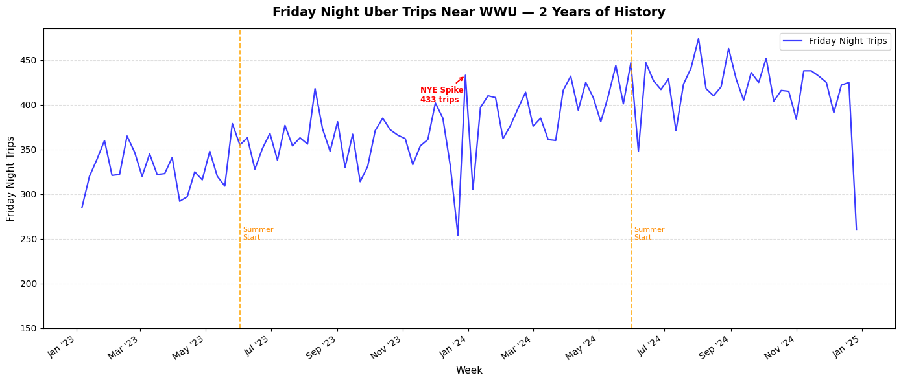

Lab Project · Spring 2025 · MIS 432
A complete end-to-end forecasting pipeline — from raw historical data to an operations memo a manager can act on the morning of a sold-out concert.
Section 01 — The Business Problem
Uber has no inventory. It can't manufacture a spare driver the way a grocery store stocks an extra pallet of water before a hurricane. Every time someone opens the app, the company has seconds to answer one question: is there a driver nearby, and will that driver earn enough to stay online? Get that balance wrong in one direction and riders wait ten minutes, check Lyft, and leave. Get it wrong in the other and drivers circle empty neighborhoods, burn gas, and log off. Demand forecasting is the invisible engine that prevents both failures — it tells Uber where to pre-position supply, when to activate surge pricing to attract more drivers, and how many cars a city actually needs at 10pm on a Friday. Without it, Uber isn't a tech company. It's a taxi dispatcher hoping for the best.
Section 02 — The Data and the Model
I started with 104 weeks of simulated Friday night trip data for the area near WWU's campus in Bellingham — enough history to capture the full seasonal cycle twice. I engineered four features from the raw dates: a week number to capture the long-run growth trend, a summer flag that reflected WWU's enrollment drop, a New Year's Eve spike indicator, and a school-year flag that turned on the baseline student ridership. After training a linear regression model on this feature set, I backtested it against held-out weeks to measure how well the model tracked reality before trusting it with any real decision.
The chart below shows two years of actual Friday night trips. The NYE spike, the summer dips at each "Summer Start" dashed line, and the overall upward growth trend are all visible — these are the patterns the model had to learn.

BACKTEST CHART DESCRIPTION (2–3 sentences): Describe where the model tracked reality closely and where it diverged. For example: "The model captured the summer dip and the school-year baseline well, but underestimated the NYE spike by roughly 40 trips. In the back half of year two, the model's predictions stayed slightly below the actual line — evidence that the real market was growing faster than the model's linear trend assumed."
The dashed line is what the model predicted. The solid line is what actually happened. The gap between them is the model's error — and the honest measure of how much to trust it.
Section 03 — The Concert Night Prediction
Here is the actual operations recommendation the model produced for the Death Cab for Cutie, Sleater-Kinney, and ODESZA homecoming concert at WWU.
CONCERT NIGHT MEMO: Copy and paste the exact text your Step 3 code printed inside the memo block below. Replace this placeholder with the full ╔═══╗ bordered memo output, including all sections: EVENT, PREDICTED DEMAND, DRIVER STAFFING RECOMMENDATION, SURGE PRICING, UPSIDE RISK, and MODEL LIMITATION DISCLOSURE.
Why a memo, not a dashboard? The model's job is to produce a number. The analyst's job is to translate that number into a decision a manager can act on. The memo above is the bridge — it states the prediction, the uncertainty range, the staffing recommendation, and — critically — the model's own limitation so the decision-maker isn't flying blind.
Section 04 — Stress-Testing the Forecast
Before sending that memo, I stress-tested the key assumptions to understand how fragile the recommendation was.
STRESS TEST RESULT: Paste your stress-test flip row here — the specific feature combination that changed the surge recommendation from YES to NO (or vice versa), and the conclusion paragraph your code printed explaining what that means for the decision.
In practice, stress-testing is what separates a responsible analyst from a number-printer. A model produces a point estimate; a stress test reveals which assumptions that estimate is sensitive to. If flipping a single feature — say, assuming school is out instead of in session — reverses the surge recommendation entirely, that's critical information for the operations manager. They now know to confirm the school calendar before acting, rather than discovering the error at 10:05pm when drivers are in the wrong part of the city.
Risk The most dangerous forecast is the one that looks precise but is actually hanging on a single unverified assumption. Stress-testing surfaces those dependencies before they become operational failures.
Section 05 — When the Algorithm Decides
In the real Uber system, the forecast doesn't hand a memo to a manager — it feeds directly into a pricing algorithm that sets the surge multiplier automatically, city by city, minute by minute, with no human review between the model output and the fare a rider sees. When the model is right, this is elegant: supply and demand balance quietly in the background, drivers earn more during peaks, riders who need a ride get one. But when the model is wrong — when a 6.0 earthquake has just shut down three highway on-ramps and displaced thousands of people into areas the model has never seen — the algorithm cheerfully activates 4× surge on people who have nowhere else to go, because the input pattern looks like "high demand Friday" and the model has no concept of "disaster." The forecast was technically accurate on its own terms. The decision it triggered was not.
This is the prediction–decision gap: the model answers the question it was trained on, and the algorithm assumes that question is always the right one to be asking. There is no circuit breaker that says this situation is outside my training distribution — pause and ask a human. That gap is a design choice, and it is a choice with real consequences for real people.
Section 06 — When the Model Breaks
Six weeks after the concert, something changed in Bellingham: WWU's enrollment dropped by 800 students as a budget-driven admissions cap took effect, two hundred new apartments opened in the Cordata neighborhood well north of campus, and Lyft quietly relaunched service in Whatcom County after an 18-month absence. The model had no idea. It kept predicting Friday nights based on a world that no longer existed — a growing, campus-centered, Uber-only market — and kept recommending driver counts and surge thresholds calibrated to that ghost. Drivers followed the model into zones where rides weren't coming. Riders in Cordata waited eleven minutes and switched to Lyft. Nobody told them the model was stale. Nobody told the model it was wrong. The degradation was silent, gradual, and expensive before anyone traced the earnings drop back to a distribution shift rather than a bad week.
This is the unsexy failure mode of production ML systems. The model doesn't crash. It just quietly becomes wrong — and keeps shipping confident predictions until someone notices the business metric moving in the wrong direction and starts asking why.
Section 07 — My Analysis
STEP 8 REFLECTION: Paste your written reflection here. This is where you connect the technical work to the bigger picture — what surprised you, what the lab taught you about the gap between building a model and deploying one responsibly, and what you'd do differently if you were the actual Uber analyst writing this memo for a real operations manager.
Built in MIS 432: AI in Business · Western Washington University · Spring 2025. Tools used: Python, pandas, scikit-learn, matplotlib, NumPy. All data is simulated for educational purposes.